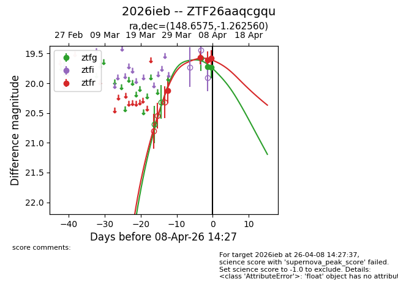
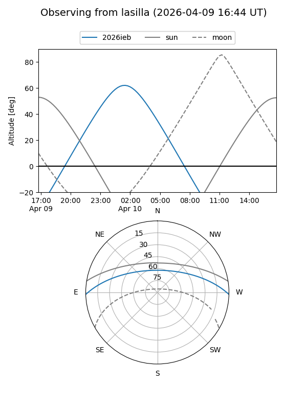
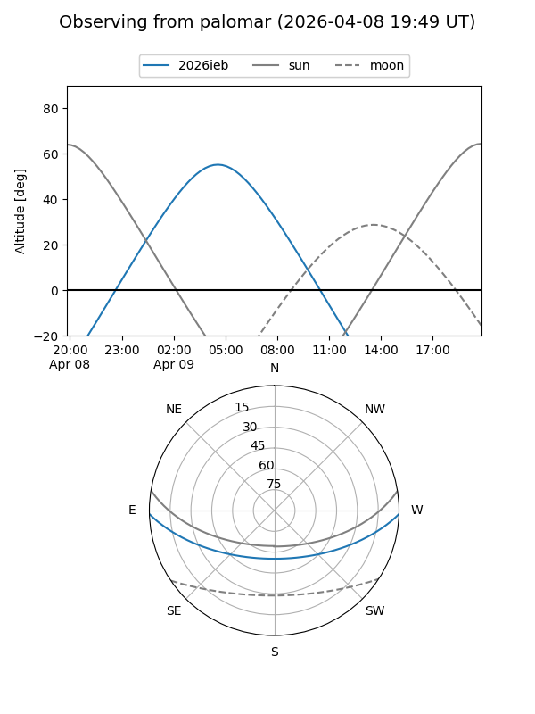
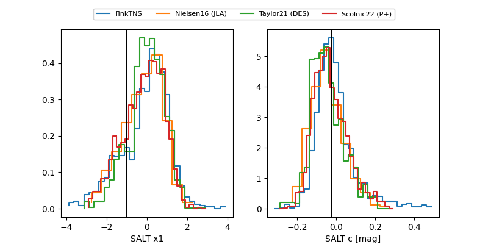

2026ieb
Target 2026ieb at 2026-04-08 14:32
Aliases and brokers:
FINK: link
Lasair: link
ALeRCE: link
TNS: link
YSE: link
alt names
ZTF26aaqcgqu (ztf,fink_ztf)
2026ieb (tns,yse)
Coordinates:
equatorial (ra, dec) = 148.6575,-1.26256
equatorial (HMS+DMS) = 09:54:37.80,-01:15:45.22
galactic (l, b) = (239.3593,+38.88934)
Flags:
Photometry:
last ztfg=19.73, ztfr=19.58
3 ztfg, 4 ztfr detections
Lightcurve

Visibility


Additional plots
